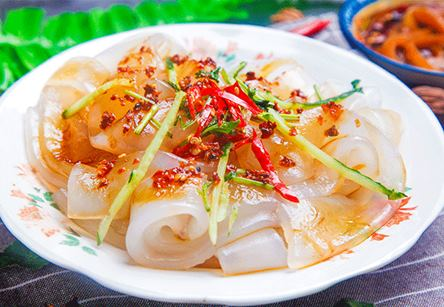

陕西面皮的做法？怎么做陕西凉皮才好吃呢
发布日期：2019/8/18 20:47:57
陕西凉皮为传统特色小吃之一，多使用小麦面粉制作，也有米粉或其他淀粉制作。一般凉拌食用（但在汉中地区，热食更为广泛），种类繁多，制作方法各异，调拌也各具特色，口味不同。

凉皮历史久远，凉皮传说源于秦始皇时期，比较常见的种类有有麻酱凉皮、秦镇米皮、汉中面皮、岐山擀面皮、面筋凉皮等。
陕西凉皮种类繁多，做法各异，调拌时各具特色，口味也不同，在这里，仅举出几种。
麻酱凉皮 一种典型的清真吃法。其做法较简单，把面粉调成糊状，盛入特制的金属凉皮锣里面，摇支凉皮锣使其平平地铺在锣底，然后放入开水锅内蒸制成熟。吃时，把面皮切成半厘米宽的条，一般加辅料为黄瓜丝，调入盐、醋、酱、芝麻酱、辣椒油等即可。
秦镇米皮 以大米粉为原料制成，因产于户县的秦镇，也叫秦镇米皮。制作时把大米粉调节为糊状，平铺在多层竹蒸笼内，旺火蒸熟。吃时，用近一米长、20多厘米宽的大铡刀铡成细丝。加入辅料青菜、小豆芽等，调入佐料，好的口味全在辣椒油上，调好的凉皮全呈红色，辣里香。
汉中面皮 因产地于汉中地区而得名。将大米淘净，浸泡后磨成浆，然后以特制的面皮锅刷上油，舀适量米浆倒入，置滚水中，稍蒸便熟。趁热食用，加入调料，主要是蒜汁、辣椒油、口味酸辣之中透着蒜香。
岐山擀面皮 岐山县制作的最佳。制作时，只要先将小麦粉洗出面筋，再把淀粉擀成薄饼，最后上蒸笼蒸制。制成凉皮既软又粘。而调料以岐山当地酿制的粮食醋和辣椒油为主，辅以洗出的面筋丝，在一小铁锅内拌合均匀，盛盘而飨客，其口味主要特点是酸、辣、香。
面筋凉皮主产于关中地区，加工时，要先洗出面筋，淀粉调成糊，盛入金属凉皮锣上锅蒸制。调制时，加入蒸烹面筋块、时令蔬菜，调味品有醋、酱、蒜汁、味精、盐、辣椒油、香油等，吃时别有风味。 除以上几种外，陕西还有扶风的烙面皮，汉中的魔芋凉皮、黑米面皮，陕北的绿豆凉皮等等。
陕西凉皮因原料不同可分为：面皮、米皮、黑米皮、魔芋皮、醋粉皮等多种。因制作方法不同又分为蒸面皮、擀面皮、烙面皮等。凉皮吃法多样，可凉拌、可热调、还可如炒面般炒着吃，但主要还是凉拌着吃。凉皮初时属夏令食品，但已经变为四季咸宜。
做法：
凉皮品种多样，各地叫法也有差别，做法上差异很大，每一种有每一种的特点，每一种也有每一种的特色。在详说各种凉皮的特色之前，先介绍一种专门用来蒸制凉皮的工具――凉皮锣。皮子罗是用白铁皮制成，圆形的，一圈有三到五厘米高的边，锣有大有小，家里自用的一般不大，直径约二三十厘米，若是开店用的锣就大多了，直径可达50厘米。使用时，每往锣里倒面糊前要先在锣中抹一层食油，用完之后，将锣洗净凉干，再给锣里均匀地抹一层油，以防生锈。一般家里都会准备两个以上的凉皮锣，在做凉皮时可以倒换着用。
麻酱凉皮
麻酱凉皮顾名思义，就是以芝麻酱为主要调料的凉皮，在西安，尤以回民坊上制作的更具特色。一种典型的清真吃法。其做法比较简单，把面粉调成糊状，盛入特制的金属凉皮箩里，摇晃凉皮箩使面精平平的铺在箩底，然后放入开水锅内蒸制成熟。吃时，把凉皮切成半厘米宽的条，一般加辅料为黄瓜丝，调入盐、醋、酱、芝麻酱、辣椒油等即可。在制作时没有洗面筋这道程序，直接将精制面粉打成面糊，面糊也要醒上一段时间，这样蒸出的凉皮才筋道，也有的人家会在面糊里打上几个鸡蛋清，以增加凉皮的筋度。蒸的方法和面筋凉皮一样，将面糊放入皮子罗内，摇匀了，下锅蒸。辅料则主要是黄瓜丝和绿色蔬菜，调料中的醋和酱油都要加水熬制，盐和蒜泥也调制成水。调拌凉皮时，先加入醋水、酱油水、盐水，最后在凉皮表面均匀地铺一层芝麻酱，吃起来满口溢着芝麻的香味，那真的是透着十分的“爽”。
秦镇米皮
秦镇米皮因出自户县秦渡镇而得名。秦渡镇，是陕西关中著名的历史名镇。《古今图书集成》记载：“秦渡即古丰地，沣水之西岸，丰旧城在焉”，此镇又被称为“周丰宫”，镇北五里处有“周文王灵台”。公元 401 年，后秦皇帝姚兴从西域迎来天竺高僧鸠摩罗什到户县草堂寺译经，在附近的沣河段设渡口，并于渡口处设置秦渡镇，随后逐渐成为交通及商业重镇，至今已1600多年。秦镇米皮以大米粉为原料制成，因产于户县的秦镇，也叫户县米皮。制作时把大米粉调成糊状，平铺在多层竹蒸笼内，旺火蒸熟。吃是，用近一米长、20多厘米宽的大铡刀铡成细丝，加入辅料青菜、小豆芽等，调入佐料，好的口位全在辣椒油上，调好的凉皮全呈红色，辣里香。
秦镇米皮用产于秦岭北麓、沣河西岸的稻谷制作，色白、光润、皮薄、细软、柔韧，吃起来酸、辣、筋、爽、凉，别有一番风味。做秦镇米皮先要泡米，把大米洗净，泡入水中，大约泡一个晚上，然后将泡过的大米再加两倍的水和在一起，用石磨磨成米浆，已不再用石磨，改为打浆机打浆。浆打成后，要测一下浓度，方法很简单，用木勺舀一勺打好的浆，提起来慢慢倒下，浆汁呈线状又不会断就可以了。
秦镇米皮用蒸的方法，一口大锅，很大的蒸笼，很多层笼屉，铺上细密的白蒸布，把米浆匀匀地倒在蒸布上，一层一层地架上去，一次可架十多层笼屉，一般蒸五分钟就熟了。切秦镇米皮的方法很独特，具有观赏性，砧板上先要铺一块白布，将米皮铺在白布上，用大铡刀密密地切过去，看上去只见铡刀把在师傅手中上下起落，铡刀另一头在砧板上轻轻移动，这套动作叫作“凤点头”。
秦镇米皮的辅料主要是黄豆芽和小芹菜。调料也比较少，盐、醋、味精、辣椒油，不放蒜，不放酱油。其中的辣椒油则是特制的，可以说，秦镇米皮最具特色的就是这辣椒油。辣椒要选上等的秦椒，凉成干辣角，连辣椒籽一起碾成辣椒面，放入精制的油中，加入花椒、茴香等佐料，用文火直熬到香味飘逸，红中透亮。这一招说起来容易，真做起来就不那么简单了，可以说，秦镇的米皮师傅把熬辣椒油视作一种绝技，也是一种秘技。一般人想学到手还真得下点功夫不行。
调米皮时讲究盐要重、醋要轻，也就是说多盐少醋，一般调时先往碗里放约四分之三的米皮，加入盐、醋、味精，然后用其余的四分之一米皮，在辣椒油碗里蘸一下，让米皮挂上辣油，若吃辣椒重的人，可以多蘸几下。调好的米皮根根都是红红的，吃完后碗底不剩一点儿汤汁。有的人吃秦镇米皮时，让师傅多放醋，其实，醋一多就失去了秦镇米皮真正的味道了。
汉中面皮
汉中面皮，是汉中地区著名的地方特色小吃。汉中面皮相传始于秦汉，一般是把大米浸泡后磨成米浆，上笼蒸成薄皮儿，趁热抹上菜籽油，切成条状，依个人口味调入油辣子、味精、精盐、醋、酱油、蒜泥等佐料，拌匀即可食用（当地多热食，称热面皮），亦可置于通风处降温后凉拌（当地称冷面皮或凉面皮）。配菜主要有豆芽、土豆丝、芹菜、菠菜等，口感软糯，香辣可口。不需即时食用时还可以晾干油炸后食用，还有炒、烩等吃法。汉中面皮一般主要采用米浆为原料，偶尔也有以小麦面粉调浆（当地称“面面皮”）或在米浆、面浆中混以其它淀粉制作的，未加“面”字前置区别的汉中面皮一般均为米浆制作。外地人多称“米皮”或“凉皮”，但在汉中从来无“凉皮”或“米皮”一说，区分食用方法则称“热面皮”和“冷面皮”，小麦面粉制作的需强调为“面面皮”。
陕西关中、河南等地凉皮一般是用面粉洗出面筋后制作，汉中面皮则为米制，在口感上汉中面皮更软糯，关中、河南等地的凉皮更有韧劲儿，且一般都配有面筋同食。此外，汉中面皮对辣椒（油辣子）更为讲究一些，且热食只在当地流行，最受欢迎的吃法也是热食。
制作方法
汉中面皮是以当地盛产的优质大米为原料，提前将大米淘净，浸泡后磨成浆，然后以特制的面皮锅锅刷上油，舀适量米浆倒入，置滚水中，稍蒸便熟。提出面皮锅锅，凉水中隔水略浸，以筷头顺锅沿一旋，反扣，一张雪白柔软的面皮子便成了。家庭多用此法。凉水中隔水略浸是为了面皮同锅分离，如无粘连，也可不用。
用蒸笼蒸时一次可制作出多张面皮，舀适量米浆分别倒入每层屉布，摊平，叠放好蒸笼，旺火一般2~3分钟即熟。面皮店多用此法。
将面皮抹上少许熟油防粘连，叠折后用刀切成条状。热面皮现蒸现切现调现吃，一般切得较宽。凉食时切得较细。
岐山擀面皮
岐山擀面皮做法如下：首先要准备一个大锅。把适量的面粉倒入锅内，按1：3比例添入凉水。接着就要看看你的体力和耐力了――长时间地用力揉面，直至把面揉成稀泥状为止。接着又是体力活：擀面。从揉好的面团上揪下一块，尽力地擀（一般是最后擀成圆形），直到将其擀成2~3毫米的薄片。全部擀好以后就可上锅蒸。一般当面皮变成透明状就可以了。
宝鸡扶风烙面皮
扶风烙面皮也分两种，一种烙好了蒸，另一种蒸好了再烙，相比较蒸好了再烙的吃起来更筋道，烙面皮外焦里嫩，晶莹剔透，有“韧、筋、干、有嚼头、水分少”的风味特点。
做法如下：
第一步：和面
1 面粉加温水搅拌均匀成雪花状（最好用手来拌，比较均匀）
2 再加适量水，用筷子搅拌均匀（看起来很湿很粘的样子）
3 再揉成团，（感觉很粘手，盆子边缘也是，这时不要加面粉，要不然和的面干湿不均匀）
4 再揉一会就自然会吸收了全部水份，面光、盆光、手光。面和好了，加盖或覆保鲜膜饧30分钟
第二步：洗面
1 给放面的盆中加凉水
2 在水中揉，直至将面中的淀粉全洗出来，另准备一大盆，将洗出来的面粉水倒入大盆
3 洗到这样的程度（水基本清），再洗两遍，将最后洗的水倒掉，不要
4 洗好的面筋，放入凉水中浸泡着
5 洗出来面粉水，放到一个不碍事的地方，不要动，让其沉淀至少五到六个小时
6 沉淀好之后，慢慢倒掉上面的清水（倒时不要挪动盆子，在下面接个盆子就好），剩下的部分就可以用来做面皮了
第三步：做面皮
1 平底锅烧热，刷一点点油，倒一勺面粉水，转匀（像煎饼一样的做法），等它起泡，边缘稍卷起，出锅
2 看，很薄吧，但只是半成品，重复上面的动作，烙完所有的面粉水（我还留了一些，做别的用）
3 重叠起来放好，再放蒸锅大火蒸10分钟，就OK了
第四步：开吃
拌些黄瓜丝、绿豆芽，放调料水、盐水、辣椒油、醋（喜欢吃蒜的可以再放些用油泼过的蒜泥进去）。扶风面皮独具魅力，深受当地人喜爱。绿的青菜，白的面皮，红的辣油，看一看，色香味全，勾人馋虫；闻一闻，浓郁清爽，味美可口；吃一吃，又辣又香，满口生津，大人小孩个个吃得头上冒汗，嘴唇上沾满了油辣子，心里却美滋滋的，脸上笑得像花儿一样灿烂。